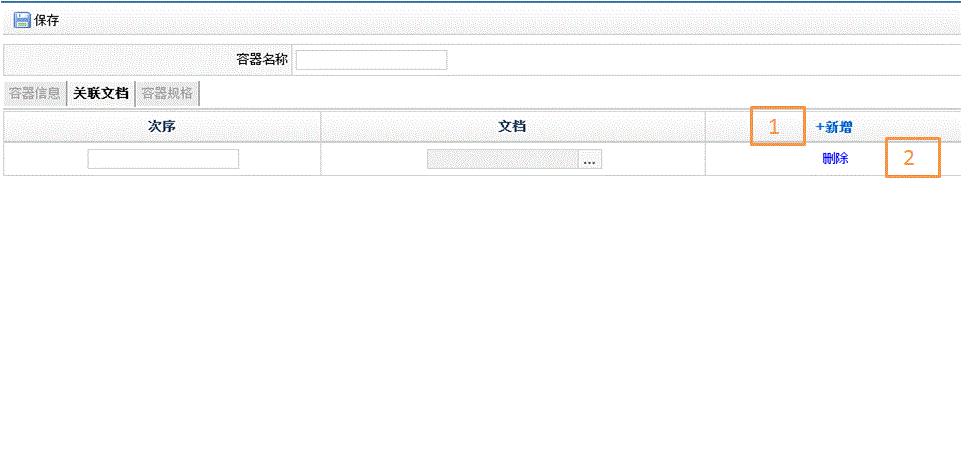
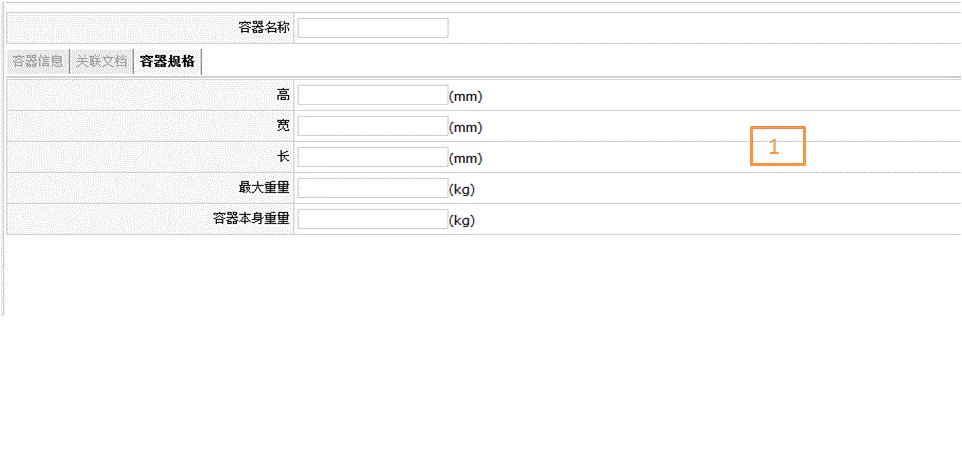
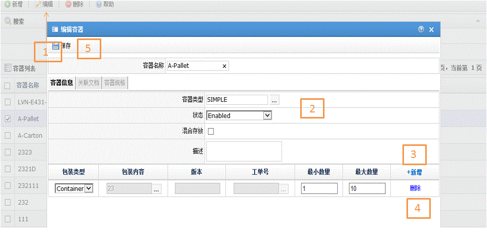

| 字段名 | 描述 |
| 容器名称 | 容器名称 |
| 混合存放 | 是否混合包装 |
| 容器类型 | 容器所属类型 |
| 状态 | 容器状态： 1.Enabled 2.Disabled |
| 描述 | 容器描述 |
| 部门组名 | 部门的名称 |
| 部门编号 | 部门的编号 |
| 描述 | 对该部门的职责描述 |
| 包装类型 | 包装对象类型： 1.Item 2.Container |
| 包装内容 | 具体包装对象 |
| 版本 | 包装对象版本号（container类型对象不存在版本号） |
| 工单号 | 包装对象工单号（container类型对象不存在工单号） |
| 最小数量 | 包装对象最小数量 |
| 最大数量 | 包装对象最大数量 |
| 次序 | 文档排序 |
| 文档 | 关联文档名称 |
| 高 | 容器高度 |
| 宽 | 容器宽度 |
| 长 | 容器长度 |
| 最大重量 | 容器承受最大重要 |
| 容器本身重量 | 容器本身重要 |


